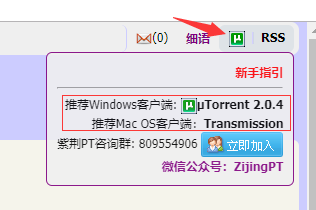
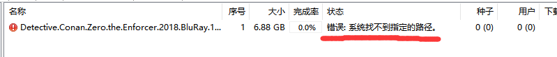
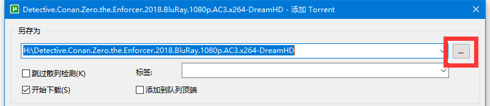

10、紫荆/PT常见问题自助解决集
作为同学们的常用网站之一，有关紫荆站的问题在互助群中也经常提及，特此收集常见问题并列出解决方案。
- 解决方案仅供参考
- 关于更多紫荆/PT站相关的问题的解答，欢迎加入紫荆咨询QQ群：809554906
10.1、用迅雷/QQ旋风下载资源没速度
不好意思，您用错了下载工具。
紫荆和所有的PT下载站一样，禁止使用迅雷/QQ旋风等不合要求的下载工具，紫荆提供了推荐下载客户端，在紫荆首页的右上角就可以找到：将鼠标放到绿色的u图标上，下载链接托盘就会出现，根据你的系统选择客户端，点击客户端名字即刻开始下载。

10.2、用uTorrent下载没速度
请先检查一下uTorrent的下载情况有没有这一行： 错误：系统找不到指定的路径。
例图： 
如果是这种情况
- 请右键下载任务->移除。
- 然后重新用uTorrent打开种子文件。
- 点击下图中被红框框起的按钮更改下载位置。 
关于为什么会出现这个问题：从上面这个图的蓝色地址里可以看出，uTorrent的默认下载位置是在H盘，如果你的电脑没有H盘，系统就找不到这个路径了。